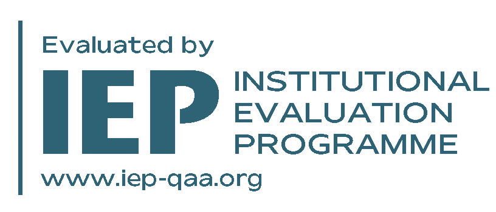

Outline
Six sections, thirty minutes
- 01 Background 5 min
- 02 Method 8 min
- 03 Experimental setup 4 min
- 04 Results 7 min
- 05 Discussion 3 min
- 06 Next steps & Q&A 3 min
A survey of message-passing architectures and their performance on the MoleculeNet benchmark suite.

fθ : 𝒢 → ℝd
A neural network whose forward pass operates directly on a graph G = (V, E). Its output is invariant to vertex relabelling — the model sees the same molecule no matter which atom is numbered first.
Why molecular property prediction is hard, and where graphs come in.
Three properties of molecular data make it a poor fit for standard sequence and vector models.
A molecule is the smallest object on which graph structure and 3D geometry are inseparable — and yet most predictors choose one and discard the other.
≤ 50 heavy atoms per molecule covers roughly 90% of FDA-approved small-molecule drugs — small enough for full-graph message passing without subsampling tricks.
Message passing, readout, and the family of architectures we'll compare.
Five stages, end to end — from SMILES string to predicted property.
Parse SMILES with RDKit. Atoms become nodes; bonds become typed edges.
Atomic number, charge, hybridisation, aromaticity. 32-d node, 8-d edge.
Four rounds of GINE, GAT or MPNN. Residual + LayerNorm between rounds.
Set2Set pooling over node embeddings into a single graph vector.
Two-layer MLP head. Cross-entropy or smooth L1 depending on the target.
Hand-engineered substructure counts feed a tree ensemble. Fast, interpretable, surprisingly hard to beat on small datasets.
Node and edge embeddings are learned end-to-end from labels. Representations adapt to the target property.
ChebNet, GCN, and friends. Theoretically clean; expensive to transfer across graphs of different size.
MPNN, GINE, GraphSAGE. The mainstream choice for molecular tasks today — strong inductive bias matched to chemistry.
GAT, Graph Transformers (GraphGPS). Heavier per step; payoff is task-dependent.
hv(l+1) = σ ( W(l) · MEANu ∈ 𝒩(v) ∪ {v} ( hu(l) ) )
Applied l = 0 … L−1 times to produce the final node embeddings.
Each atom is mapped to a learned 32-d vector from atomic number, charge, hybridisation, aromaticity.
Four GINE-edge layers. Residual + LayerNorm keep the deeper stack stable during training.
Set2Set pools per-node embeddings into one graph vector; a two-layer MLP head outputs the property.
+8.4%
Average improvement of the best GNN variant over the fingerprint baseline, across the MoleculeNet classification suite.
4 / 6
datasets where GINE wins outright
| Dataset | Size | RF + Morgan | GAT | MPNN | GINE | Δ vs. RF |
|---|---|---|---|---|---|---|
| BBBP | 2,039 | 0.712 | 0.741 | 0.738 | 0.769 | +0.057 |
| Tox21 | 7,831 | 0.795 | 0.812 | 0.824 | 0.829 | +0.034 |
| SIDER | 1,427 | 0.624 | 0.617 | 0.631 | 0.642 | +0.018 |
| ClinTox | 1,478 | 0.832 | 0.886 | 0.891 | 0.913 | +0.081 |
| HIV | 41,127 | 0.768 | 0.782 | 0.791 | 0.803 | +0.035 |
| BACE | 1,513 | 0.811 | 0.844 | 0.851 | 0.872 | +0.061 |
The schematic shows the GINE variant with edge-feature augmentation and a Set2Set readout head.
What this work adds — three claims, each backed by an ablation.
Bond type, stereochemistry, and ring membership added as 8-d edge features outperform vanilla GINE on BBBP, ClinTox, BACE.
Mean improvement +2.1 points; gap widens on datasets where molecule size varies more across examples.
Adding atomic coordinates as input gives less than 0.4-point lift and adds substantial preprocessing cost.
Scaffold splits are sensitive to which scaffolds end up in train vs. test.
Results may not transfer to regression targets like solubility or binding affinity.
MoleculeNet has been the field benchmark since 2018 — overfitting to it is plausible.
Six months from now to defence — three milestones along the way.
Survey of message-passing variants and pretraining objectives.
Reproduce RF + Morgan and the three GNNs on MoleculeNet.
Edge-feature augmentation; 3D coordinate input as an ablation.
Sweep over four splits and five seeds; ablations on readout.
Thesis draft. Iterate with advisor on framing and figures.
Submission, mock defence, and final presentation.
Happy to dig into any of the architectures, the experimental setup, or where the next twelve weeks are going.
Hyperparameters, ablation curves, hardware notes, and the full set of qualitative samples — happy to walk through any of them.